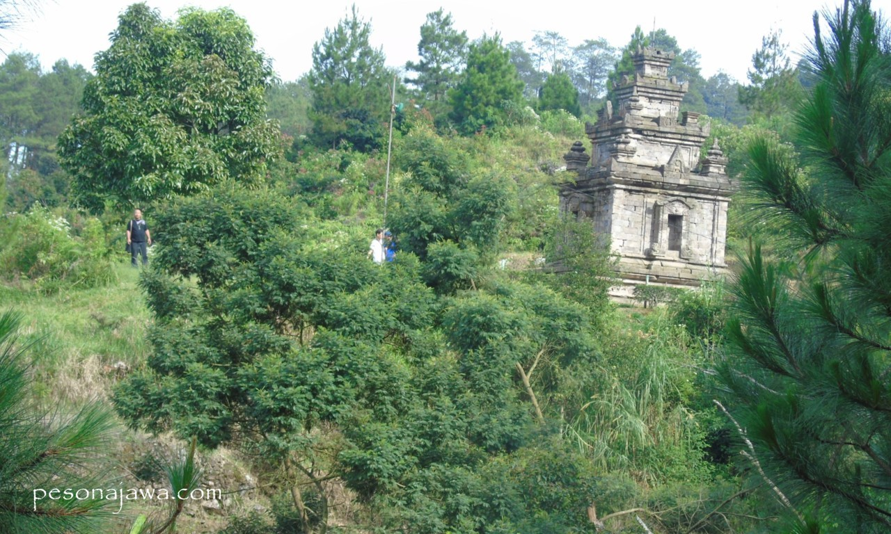

Menjernihkan Pikiran dengan Pandangan Mata di Gedong Songo

Gedhong Sanga
Candhi Gedhong Sanga itulah nama asli Candi Gedong Songo (sembilan candi) adalah komplek bangunan candi yang terdiri dari 5 area candi, yaitu Candi Gedong I sampai dengan Candi Gedong V. Area bangunan candinya ada 5 dan jumlah candi induk ada 6, selain itu terdapat beberapa candi apit dan candi perwira. Loten adalah peneliti asal Belanda yang pertama kali menemukan area candi ini pada tahun 1740 kemudian dituliskan oleh Thomas S. Raffles pada tahun 1804 dengan memberikan nama Gedong Pitoe karean Raffles menghitungnya ada 7 bangunan candi.
Jalan Menuju 5 Kompleks Candi, gambar diambil pada 2020-05-21
Memanjakan Mata
Candi Gedong V dibangun di atas bukit yang berada di ketinggian 1.307 m di atas permukaan laut sungguh sangat sejuk, memanjakan mata dan menjernihkan pikirn. Destinasi wisata di Kabupaten Semarang tersebar di beberapa tempat dengan pemandangan yang indah seperti Umbul Sidomukti yang berada tidak jauh dari Candi Gedong Songo. Kedua destinasi wisata ini merupakan destinasi pilihan utama bagi para wisatawan yang melakukan rekreasi untuk memerlukan penyegaran.

Candi Gedong Songo - Candi diantara Pepohonan, gambar diambil pada 2020-05-21
Jika sahabat pesonajawa berkununjung ke Candi Gedong Songo, jangan meliwatinya begitu saja area Candi Gedong II, tetapi gunakan waktumu paling lama di area ini. Candi Gedong II memiliki area yang sangat menarik dan merupakan pilihan para pengunjung untuk berfoto. Dari area candi ini Nampak pemandangan yang sangat indah seolah berada di atas awan.
Pemandangan dari Candi Gedong Songo, gambar diambil pada 2020-05-21
Jika sahabat pesonajawa berkununjung ke Candi Gedong Songo, jangan meliwatinya begitu saja area Candi Gedong II, tetapi gunakan waktumu paling lama di area ini. Candi Gedong II memiliki area yang sangat menarik dan merupakan pilihan para pengunjung untuk berfoto. Dari area candi ini Nampak pemandangan yang sangat indah seolah berada di atas awan.
Banyak Hotel di Dekat Komplek Candi
Sebaiknya sahabat pesonajawa mencari hotel yang berada di sekitar komplek candi ketika akan berkunjung ke Candi Gedong Songo. Berkunjung di sore hari sampai dengan pukul 18.00 dan menginap di hotel terdekat, kemudian di pagi hari pukul 06.00 kembali lagi berkunjung ke Candi Gedong Songo dan rasakan perbedaan suasananya.
Jarak dari Simpang Lima Kota Semarang menuju Candi Gedong Songo sekitar 44 km yang dapat ditempuh dalam waktu 1 jam. Sedangkan dari Pintu Tol Bawen berjarak 17 km atau sekitar 30 menit perjalanan. Untuk harga tiket saat ini adalah Rp. 20.000,- untuk orang dewasa dan Rp. 10.000,- untuk anak-anak.